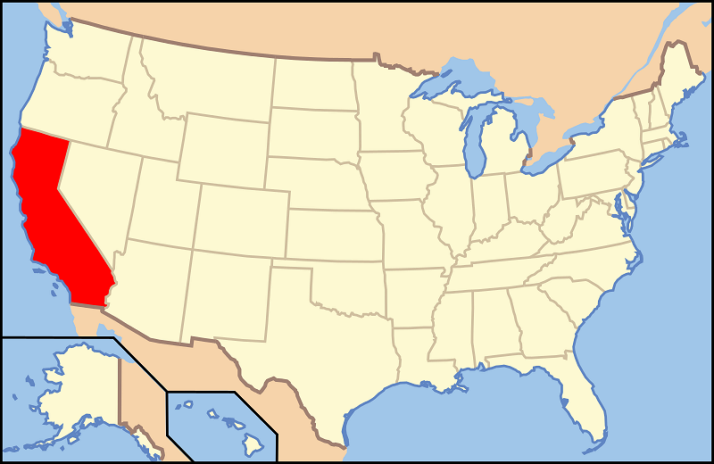

Los Angeles Vibes!
Introdução |
Localização |
Multimédia |
Informações |
Home

Localização

A cidade de Los Angeles , encontra-se nos Estados Unidos da América(América do Norte) Localização do Condado de Los Angeles na Califórnia.
om uma área de 12 305 km²,[3] dos quais 1 795 km² estão cobertos por água e 10 510 km² por terra, o Condado de Los Angeles possui uma extensão de 110 km ao longo da costa do Oceano Pacífico e abrange inúmeras outras paisagens naturais, incluindo grandes picos, vales profundos, florestas, ilhas, lagos, rios e desertos.
Principais divisões do condado
Leste: Eastside, Vale de San Gabriel, Vale de Ponoma
Oeste: Westside, Beach Cities
Sul: South Bay, Península de Palos Verdes, South Los Angeles, Gateway Cities
Norte: Vale de São Fernando, partes do Vale de Santa Clarita e do Vale Antelope
Centro: Centro de Los Angeles, Mid-Wilshire
Lagos e reservatórios
Visualização da cidade no Google Maps